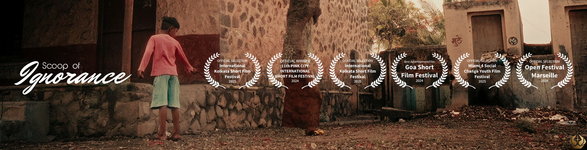
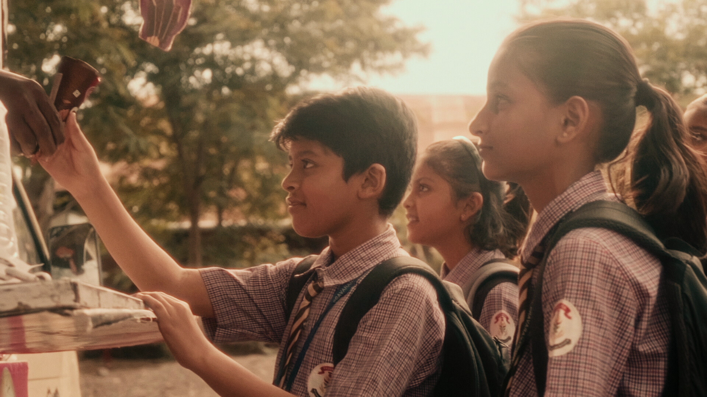
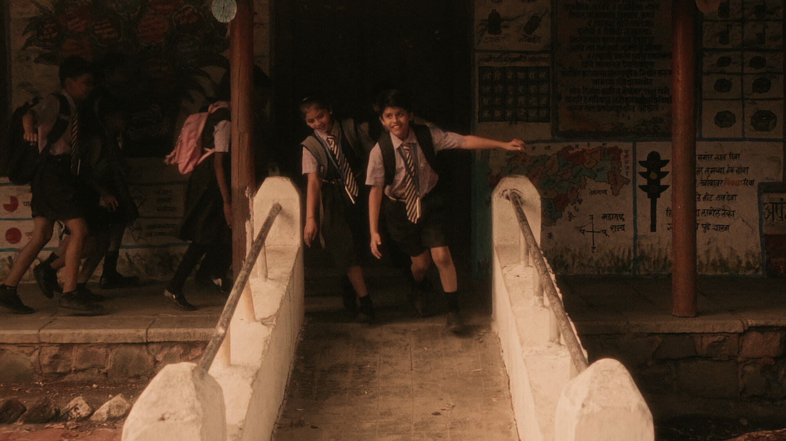
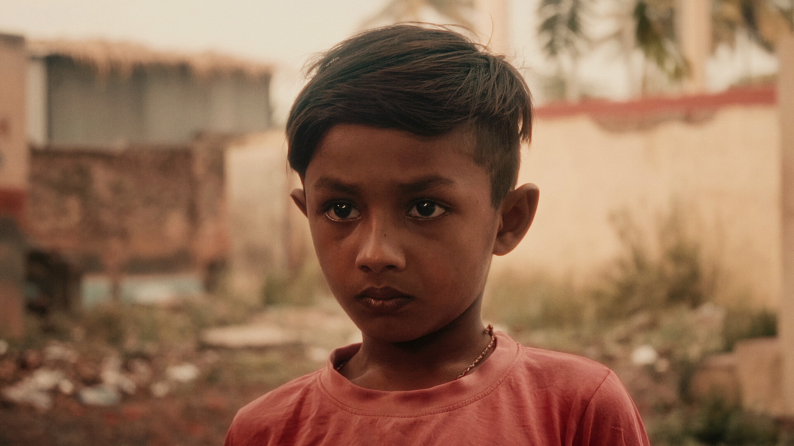
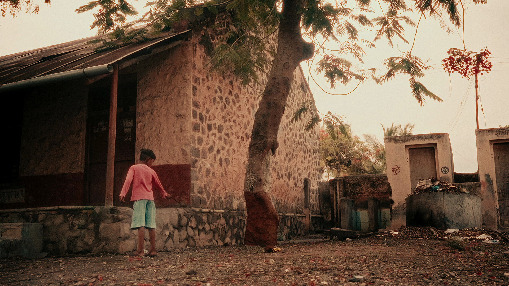

2024
Producer / Sound Designer
Atharva Mhaske
A Public Service Announcement (PSA) focusing on the illiteracy crisis in India. The film highlights the profound impact of ignorance and illiteracy on individuals and communities, urging for societal and educational reform.
Written & Directed by Vardhaman Abad
Produced by Atharva Mhaske
Director of Photography: Sarvesh Peshkar
Edited by Vardhaman Abad & Tanishq Bhawnani
Sound Design by Atharva Mhaske
DI & VFX by Vardhaman Abad



